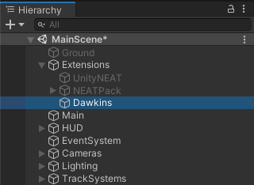
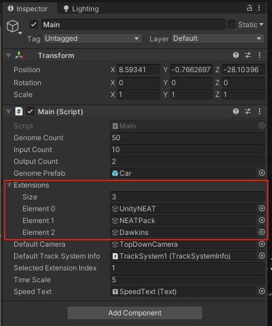
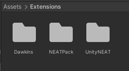
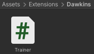
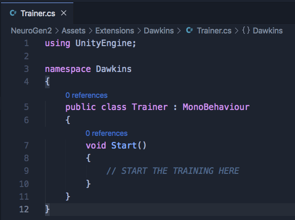

Creating an Extension
Creating a NeuroGen extension is easy and straightforward. Let’s assume that the extension we’re creating is named Dawkins. Proceed by following the tasks below sequentially:
Creating the Extension’s Main GameObject
Your extension must have at least one GameObject that holds all the scripts required for initiating training - it’s known as the extension’s main GameObject. It must be deactivated by default and should only be activated by the core of NeuroGen, not by the extension itself.
| Conventionally, the name of the extension’s main GameObject is kept the same as the extension itself. |
The main GameObject may look something like this:

Conventionally, the GameObject representing the extension is kept as the child of a GameObject named Extensions in the MainScene.
|

Registering the Extension in the Core
NeuroGen initiates all its operations through the Main module. This module holds and activates the GameObject of the selected extension automatically. However, to let the Main module do so, you need to add the extension’s GameObject to the list of extensions in the Main module. This way, the core of NeuroGen, which the Main module is part of, is aware of the extension’s existence.
This is how the "Extensions" list of the Main module looks like after Dawkins is added:

Writing the Scripts
All the scripts associated with the extension conventionally reside in its own directory in the /Assets/Extensions directory, where the leading forward-slash indicates the root of NeuroGen’s source directory.
This is how the /Assets/Extensions directory may look like after creating a directory for Dawkins:

| It’s recommended to wrap all the scripts of your extension in its own namespace. Whilst naming a namespace, make sure it has least possibility of any naming collision. |
Since the extension’s main GameObject is activated when the extension is selected to take control of the training, all the scripts that must run to initiate training should be attached to it as its components.
For Dawkins, let’s create a script called Trainer and keep it inside the /Assets/Extensions/Dawkins directory:

This is how the contents of the script may look like:

Let’s attach it to the extension’s main GameObject so its Start method gets invoked whenever the extension is activated. This is where we can write code to begin the training: